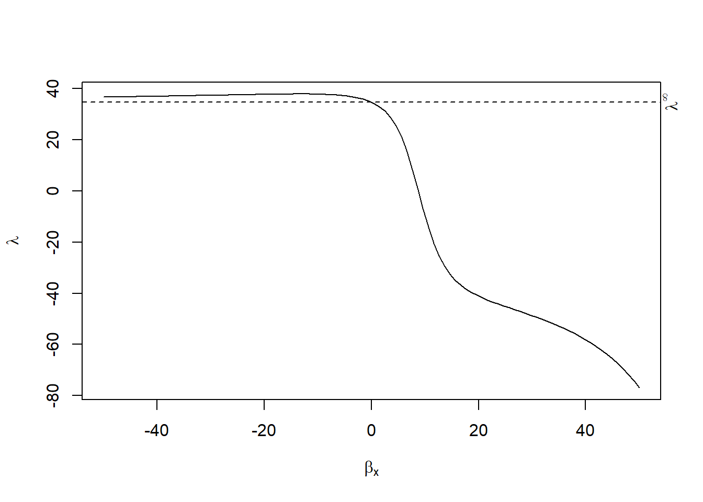
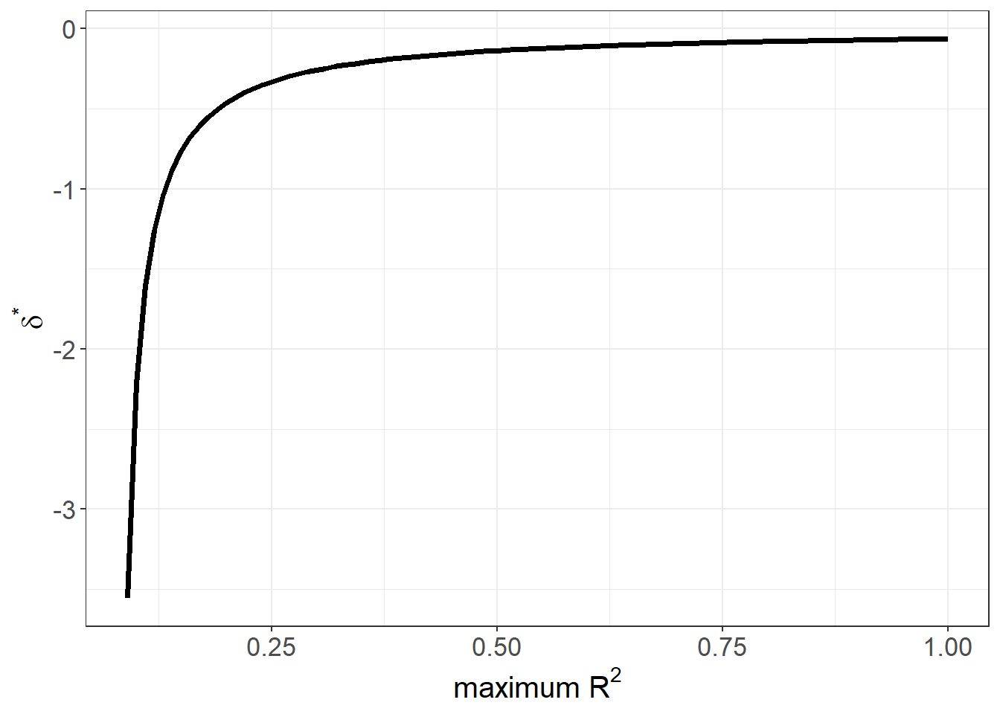
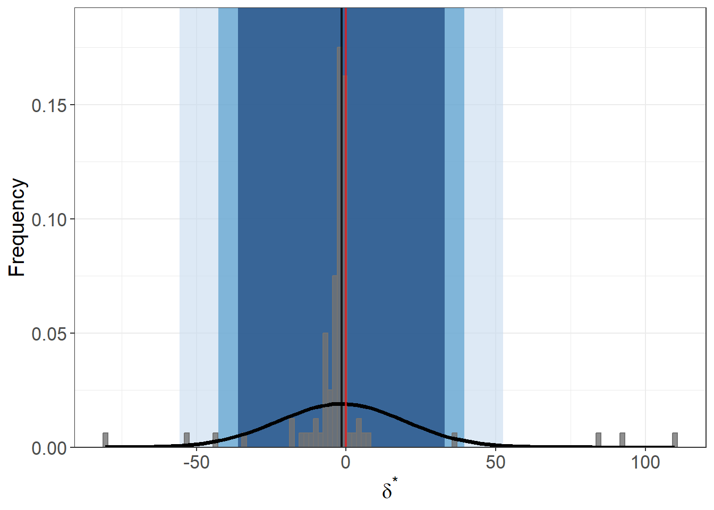
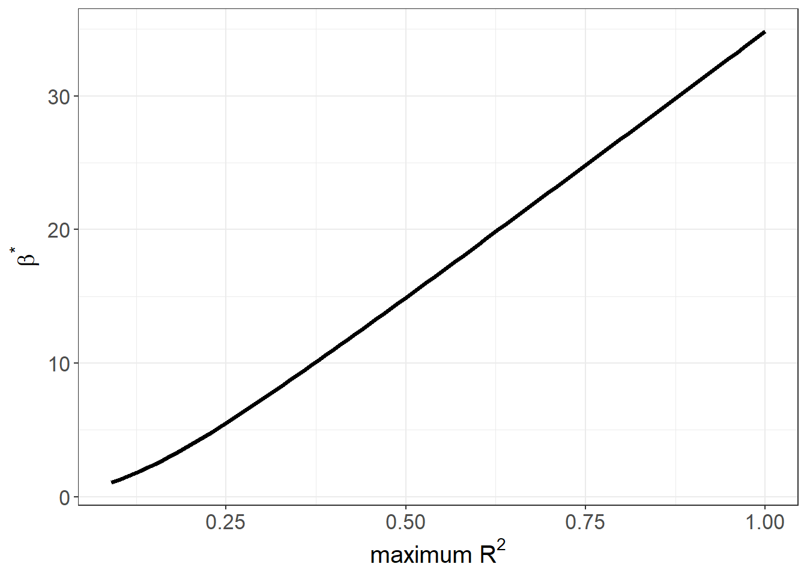

35.10 Selection on Unobservables
While randomized experiments help eliminate bias from unobserved factors, observational data often leave us vulnerable to selection on unobservables—a scenario where omitted variables jointly affect both treatment assignment and outcomes. Unlike selection on observables, these unobserved confounders cannot be directly controlled by regression or matching techniques.
One popular strategy to mitigate bias from observable variables is matching methods. These methods are widely used to estimate causal effects under the assumption of selection on observables and offer two primary advantages:
- They reduce reliance on functional form assumptions (unlike parametric regression).
- They rely on the assumption that all covariates influencing treatment assignment are observed.
However, this key assumption is often unrealistic. When relevant covariates are unmeasured, bias from unobservables remains a threat. To address this concern, researchers turn to Rosenbaum Bounds, a sensitivity analysis framework that quantifies how strong hidden bias must be to explain away the observed treatment effect.
Several econometric methods have been developed to test the robustness of causal estimates against such hidden bias. Below are key strategies that researchers commonly employ:
Rosenbaum Bounds
This approach assesses the sensitivity of treatment effects to potential hidden bias by bounding the treatment effect under varying assumptions about the strength of unobserved confounding. It is particularly useful when treatment assignment is believed to be conditionally ignorable, but this assumption may be imperfect.Endogenous Sample Selection (Heckman-style correction)
When sample selection is non-random and correlated with unobserved variables influencing the outcome, the Heckman selection model provides a correction. It introduces the inverse Mills ratio \(\lambda\) as a control function. A statistically significant \(\lambda\) indicates that unobserved factors influencing selection also affect the outcome, pointing to endogenous selection.- Interpretation tip: A significant \(\lambda\) suggests selection bias due to unobservables, and the Heckman model adjusts the outcome equation accordingly.
- This method is frequently applied in labor economics and marketing analytics (e.g., correcting for self-selection in surveys or consumer choice modeling).
Relative Correlation Restrictions
This method imposes assumptions about the correlation between observed and unobserved variables. For instance, by assuming that the selection on unobservables is not stronger than the selection on observables (as in Altonji, Elder, and Taber (2005)), one can identify bounds on causal effects. These approaches often rely on auxiliary assumptions or symmetry restrictions to enable partial identification.Coefficient-Stability Bounds
This technique evaluates how treatment effect estimates change with the inclusion of additional control variables. If the coefficient on the treatment variable remains stable as more covariates are added, it suggests robustness to omitted variable bias.- This idea underlies methods like Oster’s \(\delta\) method (Oster 2019), which quantifies how much selection on unobservables would be required to nullify the observed effect, assuming proportional selection between observables and unobservables.
In applied business research—such as customer retention, credit scoring, or pricing analytics—selection on unobservables is often unavoidable. These methods do not eliminate the problem but provide frameworks to quantify and interpret the risk of hidden bias. The choice among these tools depends on the specific context, data availability, and the plausibility of underlying assumptions.
35.10.1 Rosenbaum Bounds
Rosenbaum Bounds assess the robustness of treatment effect estimates to hidden bias by introducing a sensitivity parameter \(\Gamma\) (gamma), which captures the potential effect of an unobserved variable on treatment assignment.
- \(\Gamma = 1\): Indicates perfect randomization—units in a matched pair are equally likely to receive treatment.
- \(\Gamma = 2\): Suggests that one unit in a matched pair could be up to twice as likely to receive treatment due to an unmeasured confounder.
Since \(\Gamma\) is unknown, sensitivity analysis proceeds by varying \(\Gamma\) and examining how the statistical significance and magnitude of the treatment effect respond. This allows us to evaluate how strong an unobserved confounder would need to be to invalidate our findings.
Because the unobserved variable must affect both selection into treatment and outcomes, Rosenbaum Bounds are often described as a worst-case analysis (DiPrete and Gangl 2004).
Imagine we match two individuals based on age and education. One receives treatment, the other does not. If there’s an unmeasured trait (say, motivation) that makes one of them twice as likely to receive treatment, this is equivalent to \(\Gamma = 2\).
We then ask: At what level of \(\Gamma\) does our result lose significance? If that level is very high (e.g., \(\Gamma = 3\) or more), we can be more confident in our findings.
In layman’s terms, consider two matched individuals who differ only in an unobserved trait (e.g., motivation). If one of them is twice as likely to receive treatment because of this unobservable, this corresponds to \(\Gamma = 2\). We then ask: Would the treatment effect remain significant under this level of hidden bias?
If the estimated effect becomes insignificant only at high values of \(\Gamma\) (e.g., \(\Gamma > 2\)), the effect is considered robust. Conversely, if statistical significance vanishes at \(\Gamma \approx 1.1\), the effect is highly sensitive to hidden bias.
35.10.1.1 Technical Summary
- Rosenbaum Bounds assess sensitivity without requiring knowledge of the direction of the unobserved bias.
- They apply to matched data, typically using Wilcoxon signed-rank tests or other non-parametric statistics.
- In the presence of random treatment assignment, such non-parametric tests are valid directly.
- In observational data, they are valid under the assumption of selection on observables. If that assumption is questionable, Rosenbaum Bounds offer a way to test its believability (Rosenbaum 2002).
A typical Rosenbaum Bounds analysis presents:
- The \(p\)-value for statistical significance at increasing levels of \(\Gamma\).
- The Hodges-Lehmann point estimate (a robust median-based treatment effect estimator).
- The critical \(\Gamma\) value at which the treatment effect becomes insignificant.
These analyses do not provide exact bounds on treatment effect estimates. For that, other approaches such as Relative Correlation Restrictions are required.
35.10.1.2 Technical Framework
Let \(\pi_i\) denote the probability that unit \(i\) receives treatment. The odds of treatment are:
\[ \text{Odds}_i = \frac{\pi_i}{1 - \pi_i} \]
Ideally, after matching, if there’s no hidden bias, \(\pi_i = \pi_j\) for unit \(i\) and \(j\).
Rosenbaum bounds constrain the odds ratio between two matched units \(i\) and \(j\):
\[ \frac{1}{\Gamma} \le \frac{\text{Odds}_i}{\text{Odds}_j} \le \Gamma \]
This relationship links the hidden bias directly to selection probabilities.
Suppose treatment assignment follows:
\[ \log\left( \frac{\pi_i}{1 - \pi_i} \right) = \kappa x_i + \gamma u_i \]
where \(u_i\) is an unobserved covariate, and \(x_i\) is an observed covariate. The greater the \(\gamma\), the stronger the influence of the unobservable.
35.10.1.3 Sensitivity Analysis Procedure
- Choose a plausible range of \(\Gamma\) (typically from 1 to 2.5).
- Assess how the p-value or the magnitude of the treatment effect (Hodges Jr and Lehmann 2011) (for more details, see Hollander, Wolfe, and Chicken (2013)) changes with varying \(\Gamma\) values.
- Employ specific randomization tests based on the type of outcome to establish bounds on inferences.
- Report the minimum value of \(\Gamma\) at which the treatment treat is nullified (i.e., become insignificant). And the literature’s rules of thumb is that if \(\Gamma > 2\), then we have strong evidence for our treatment effect is robust to large biases (Proserpio and Zervas 2017).
If treatment is clustered (e.g., by region or school), standard Rosenbaum bounds must be adjusted. See (B. B. Hansen, Rosenbaum, and Small 2014) for methods that extend sensitivity analysis to clustered settings—analogous to using clustered standard errors in regression.
35.10.1.4 Empirical Marketing Examples
The table below shows \(\Gamma\) thresholds needed to nullify treatment effects in real-world marketing studies:
| Study | Critical \(\Gamma\) | Context |
|---|---|---|
| (Oestreicher-Singer and Zalmanson 2013) | 1.5 – 1.8 | User community participation on willingness to pay |
| (M. Sun and Zhu 2013) | 1.5 | Revenue-sharing program and content popularity |
| (Manchanda, Packard, and Pattabhiramaiah 2015) | 1.6 | Impact of social referrals on purchase behavior |
| (Sudhir and Talukdar 2015) | 1.9 – 2.2 | IT adoption effects on productivity |
| (Proserpio and Zervas 2017) | 2.0 | Management responses and online reputation |
| (S. Zhang et al. 2022) | 1.55 | Verified photos and Airbnb demand |
| (Chae, Ha, and Schweidel 2023) | 27.0 | Paywall suspensions and future subscriptions (not a typo) |
Packages
rbounds(L. Keele 2010)sensitivitymv(Rosenbaum 2015)
Since we typically assess our estimate sensitivity to unboservables after matching, we first do some matching.
library(MatchIt)
library(Matching)
data("lalonde", package = "MatchIt")
# Matching
matched <- matchit(treat ~ age + educ, data = MatchIt::lalonde, method = "nearest")
summary(matched)
#>
#> Call:
#> matchit(formula = treat ~ age + educ, data = MatchIt::lalonde,
#> method = "nearest")
#>
#> Summary of Balance for All Data:
#> Means Treated Means Control Std. Mean Diff. Var. Ratio eCDF Mean
#> distance 0.3080 0.2984 0.2734 0.4606 0.0881
#> age 25.8162 28.0303 -0.3094 0.4400 0.0813
#> educ 10.3459 10.2354 0.0550 0.4959 0.0347
#> eCDF Max
#> distance 0.1663
#> age 0.1577
#> educ 0.1114
#>
#> Summary of Balance for Matched Data:
#> Means Treated Means Control Std. Mean Diff. Var. Ratio eCDF Mean
#> distance 0.3080 0.3077 0.0094 0.9963 0.0033
#> age 25.8162 25.8649 -0.0068 1.0300 0.0050
#> educ 10.3459 10.2865 0.0296 0.5886 0.0253
#> eCDF Max Std. Pair Dist.
#> distance 0.0432 0.0146
#> age 0.0162 0.0597
#> educ 0.1189 0.8146
#>
#> Sample Sizes:
#> Control Treated
#> All 429 185
#> Matched 185 185
#> Unmatched 244 0
#> Discarded 0 0
matched_data <- match.data(matched)
# Split into groups
treatment_group <- subset(matched_data, treat == 1)
control_group <- subset(matched_data, treat == 0)
# Load rbounds package
library(rbounds)
# P-value sensitivity
psens_res <- psens(treatment_group$re78,
control_group$re78,
Gamma = 2,
GammaInc = 0.1)
psens_res
#>
#> Rosenbaum Sensitivity Test for Wilcoxon Signed Rank P-Value
#>
#> Unconfounded estimate .... 0.9651
#>
#> Gamma Lower bound Upper bound
#> 1.0 0.9651 0.9651
#> 1.1 0.8969 0.9910
#> 1.2 0.7778 0.9980
#> 1.3 0.6206 0.9996
#> 1.4 0.4536 0.9999
#> 1.5 0.3047 1.0000
#> 1.6 0.1893 1.0000
#> 1.7 0.1097 1.0000
#> 1.8 0.0597 1.0000
#> 1.9 0.0308 1.0000
#> 2.0 0.0151 1.0000
#>
#> Note: Gamma is Odds of Differential Assignment To
#> Treatment Due to Unobserved Factors
#>
# Hodges-Lehmann estimate sensitivity
hlsens_res <- hlsens(treatment_group$re78,
control_group$re78,
Gamma = 2,
GammaInc = 0.1)
hlsens_res
#>
#> Rosenbaum Sensitivity Test for Hodges-Lehmann Point Estimate
#>
#> Unconfounded estimate .... 1376.248
#>
#> Gamma Lower bound Upper bound
#> 1.0 1376.20 1376.2
#> 1.1 852.45 1682.0
#> 1.2 456.55 2023.1
#> 1.3 137.25 2405.9
#> 1.4 -133.45 2765.2
#> 1.5 -461.65 3063.6
#> 1.6 -751.85 3328.5
#> 1.7 -946.45 3591.6
#> 1.8 -1185.50 3864.8
#> 1.9 -1404.70 4133.1
#> 2.0 -1624.60 4358.4
#>
#> Note: Gamma is Odds of Differential Assignment To
#> Treatment Due to Unobserved Factors
#> For matching with more than one control per treated unit:
library(Matching)
library(MatchIt)
n_ratio <- 2
matched <-
matchit(treat ~ age + educ,
data = MatchIt::lalonde,
method = "nearest",
ratio = n_ratio)
matched_data <- match.data(matched)
mcontrol_res <- rbounds::mcontrol(
y = matched_data$re78,
grp.id = matched_data$subclass,
treat.id = matched_data$treat,
group.size = n_ratio + 1,
Gamma = 2.5,
GammaInc = 0.1
)
mcontrol_res
#>
#> Rosenbaum Sensitivity Test for Wilcoxon Strat. Rank P-Value
#>
#> Unconfounded estimate .... 0.9977
#>
#> Gamma Lower bound Upper bound
#> 1.0 0.9977 0.9977
#> 1.1 0.9892 0.9996
#> 1.2 0.9651 0.9999
#> 1.3 0.9144 1.0000
#> 1.4 0.8301 1.0000
#> 1.5 0.7149 1.0000
#> 1.6 0.5809 1.0000
#> 1.7 0.4445 1.0000
#> 1.8 0.3209 1.0000
#> 1.9 0.2195 1.0000
#> 2.0 0.1428 1.0000
#> 2.1 0.0888 1.0000
#> 2.2 0.0530 1.0000
#> 2.3 0.0305 1.0000
#> 2.4 0.0170 1.0000
#> 2.5 0.0092 1.0000
#>
#> Note: Gamma is Odds of Differential Assignment To
#> Treatment Due to Unobserved Factors
#> Alternative Sensitivity Analysis Tools
sensitivitymw is faster than sensitivitymw. But sensitivitymw can match where matched sets can have differing numbers of controls (Rosenbaum 2015).
library(sensitivitymv)
data(lead150)
senmv(lead150, gamma = 2, trim = 2)
#> $pval
#> [1] 0.02665519
#>
#> $deviate
#> [1] 1.932398
#>
#> $statistic
#> [1] 27.97564
#>
#> $expectation
#> [1] 18.0064
#>
#> $variance
#> [1] 26.61524
library(sensitivitymw)
senmw(lead150, gamma = 2, trim = 2)
#> $pval
#> [1] 0.02665519
#>
#> $deviate
#> [1] 1.932398
#>
#> $statistic
#> [1] 27.97564
#>
#> $expectation
#> [1] 18.0064
#>
#> $variance
#> [1] 26.6152435.10.2 Relative Correlation Restrictions
In many observational studies, researchers are concerned about the impact of unobserved variables that are not included in the regression model. Even after including a comprehensive set of controls, there is always the possibility that omitted variables still bias the estimated treatment effect. Relative Correlation Restrictions (RCR) offer a formal way to assess the potential magnitude of this bias by comparing it to the observed selection.
Let’s begin with a linear outcome model:
\[ Y_i = X_i \beta + C_i \gamma + \epsilon_i \]
Where:
- \(Y_i\) is the outcome variable (e.g., revenue, engagement, churn),
- \(X_i\) is the treatment or variable of interest (e.g., paywall suspension, ad exposure),
- \(C_i\) is a set of observed control covariates,
- \(\epsilon_i\) is the error term, which may include unobserved factors.
In standard OLS regression, we assume:
\[ \text{Cov}(X_i, \epsilon_i) = 0 \]
That is, the treatment \(X_i\) is uncorrelated with the omitted variables contained in \(\epsilon_i\). This assumption is crucial for the unbiased estimation of \(\beta\), the treatment effect.
However, in observational settings, this assumption may not hold. There may be unobserved confounders that influence both \(X_i\) and \(Y_i\), biasing the OLS estimate of \(\beta\). The Relative Correlation Restrictions framework provides a way to bound the treatment effect under assumptions about the relative strength of selection on unobservables compared to selection on observables.
The method was originally proposed by Altonji, Elder, and Taber (2005) and later extended by Krauth (2016). The core idea is to assume a proportional relationship between the correlation of the treatment with the error term and its correlation with the observed controls:
\[ \text{Corr}(X_i, \epsilon_i) = \lambda \cdot \text{Corr}(X_i, C_i \gamma) \]
Here, \(\lambda\) represents the relative strength of selection on unobservables compared to observables.
- If \(\lambda = 0\), then we return to the standard OLS assumption: no unobserved selection.
- If \(\lambda = 1\), we assume that selection on unobservables is as strong as selection on observables.
- If \(\lambda > 1\), then unobserved selection is assumed to be stronger than observable selection.
- In practice, we evaluate treatment effects over a range of plausible values for \(\lambda\).
This approach allows us to bound the treatment effect based on assumptions about the degree of omitted variable bias.
The choice of \(\lambda\) is crucial and inherently subjective, but some guidelines and empirical precedents help:
- Small values of \(\lambda\) (e.g., 0–1) represent modest levels of bias and suggest that selection on unobservables is not dominant.
- Large values (e.g., \(\lambda > 2\) or higher) imply that any omitted variables must be far more predictive of treatment than the observed controls—a strong and often implausible assumption in well-specified models.
This makes RCR particularly useful for stress testing causal estimates: “How bad would unobserved selection have to be to overturn my result?”
This method has been applied to various marketing and digital strategy settings to assess the robustness of estimated effects. A few notable examples:
| Study | Context | Minimum \(\lambda\) to nullify effect |
|---|---|---|
| (Manchanda, Packard, and Pattabhiramaiah 2015) | Social dollar effect: impact of peer influence on purchasing behavior | 3.23 |
| (Chae, Ha, and Schweidel 2023) | Paywall suspension: effect on future subscription behavior | 6.69 |
| (M. Sun and Zhu 2013) | Ad revenue-sharing: impact on content popularity |
These high \(\lambda\) values imply that unobserved selection would need to be 3 to 7 times stronger than observable selection to eliminate the estimated treatment effect. In practical terms, this offers strong evidence that the effects are robust to omitted variable bias.
We can estimate Relative Correlation Restrictions using the rcrbounds package in R, developed by Krauth (2016). This package estimates the bounds of the treatment effect across a range of \(\lambda\) values and provides inference on whether the effect would remain statistically significant.
# Install if necessary:
# remotes::install_github("bvkrauth/rcr/r/rcrbounds")
library(rcrbounds)
# Example using ChickWeight dataset
data("ChickWeight")
# Estimate treatment effect of Time on weight, controlling for Diet
rcr_res <- rcrbounds::rcr(
formula = weight ~ Time | Diet,
data = ChickWeight,
# rc_range = c(0, 10) # Test lambda from 0 to 10
rc_range = c(0, 1)
)
# Print summary
summary(rcr_res)
#>
#> Call:
#> rcrbounds::rcr(formula = weight ~ Time | Diet, data = ChickWeight,
#> rc_range = c(0, 1))
#>
#> Coefficients:
#> Estimate Std. Error t value Pr(>|t|)
#> rcInf 34.676505 50.1295005 0.6917385 4.891016e-01
#> effectInf 71.989336 112.5711682 0.6395007 5.224973e-01
#> rc0 34.741955 58.7169195 0.5916856 5.540611e-01
#> effectL 8.624677 0.3337819 25.8392614 3.212707e-147
#> effectH 8.750492 0.2607671 33.5567355 7.180405e-247
#> ---
#> conservative confidence interval:
#> 2.5 % 97.5 %
#> effect 7.970477 9.261586
# Test whether the treatment effect is significantly different from 0
rcrbounds::effect_test(rcr_res, h0 = 0)
#> [1] 5.960464e-08
# Plot the bounds of the treatment effect
plot(rcr_res)
The plot shows how the estimated treatment effect varies as we allow for stronger selection on unobservables (i.e., increasing \(\lambda\)). If the effect remains consistently different from zero even at high \(\lambda\), it provides graphical evidence of robustness.
35.10.3 Coefficient-Stability Bounds
Robust regression analysis requires methods that account for potential omitted variable bias. A contribution to this literature is the coefficient-stability framework developed by Oster (2019), which builds on the proportional selection model of Altonji, Elder, and Taber (2005). Oster (2019) derives conditions under which we can bound the bias due to unobservables using movements in the coefficient of interest and changes in model fit, as measured by \(R^2\).
More recently, Masten and Poirier (2022) have revealed that Oster’s commonly used “delta” metric is insufficient to guarantee robustness of the sign of the treatment effect. They propose distinguishing between two types of breakdown points: one where the effect becomes zero (explain-away), and another where it changes sign.
Suppose the data‑generating process for outcome \(Y\) is
\[ Y =\beta X+\underbrace{W_1^{\!\top}\gamma_1}_{\text{observed}} +\underbrace{W_2^{\!\top}\gamma_2}_{\text{unobserved}} +\varepsilon , \quad \operatorname{E}[\varepsilon|X,W_1,W_2]=0, \tag{1} \]
but the econometrician can only regress \(Y\) on \(X\) and the observed covariates \(W_1\). By the omitted‑variable‑bias (OVB) formula,
\[ \widehat\beta_{\text{med}}-\beta = \frac{\operatorname{Cov}(X,W_2^{\!\top}\gamma_2)}{\operatorname{Var}(X)} . \tag{2} \]
Because \(W_2\) is hidden, nothing inside the sample alone fixes (2). The literature therefore introduces a sensitivity parameter that gauges how strongly \(X\) is correlated with the missing variables.
Altonji, Elder, and Taber (2005) postulated that the selection on unobservables is proportional to the selection on observables. Oster (2019) formalized the idea:
\[ \frac{\operatorname{Cov}(X,W_2^{\!\top}\gamma_2)} {\operatorname{Var}(W_2^{\!\top}\gamma_2)} =\delta \frac{\operatorname{Cov}(X,W_1^{\!\top}\gamma_1)} {\operatorname{Var}(W_1^{\!\top}\gamma_1)} . \tag{3} \]
where
- \(\delta\) is the selection ratio.
- \(\delta = 1\) says “unobservables are as correlated with \(X\) as observables,” yielding the canonical “Altonji‑Elder‑Taber benchmark.”
Oster (2019) also assumes coefficient alignment (\(\gamma_1=C\pi_1\)) so we can link bias to the movement of \(\widehat\beta\) and \(R^2\) when controls are added. Under (1)–(3) the long‑run coefficient (with \(W_2\) observed) satisfies
\[ \boxed{ \beta_{\text{long}} =\beta_{\text{med}} +\bigl(\beta_{\text{med}}-\beta_{\text{short}}\bigr) \frac{R^2_{\text{long}}-R^2_{\text{med}}} {R^2_{\text{med}}-R^2_{\text{short}}} } \tag{4} \] where “short” means no controls, “med” means with \(W_1\), and “long” is the unfeasible full model. Equation (4) is the coefficient‑stability adjustment. The two sensitivity objects are
Bias‑adjusted coefficient
\[ \beta^*(\delta,R^2_{\max})\equiv \beta_{\text{long}} \quad\text{after substituting }R^2_{\text{long}}=R^2_{\max}, \delta\text{ into (4);} \tag{5} \]
Breakdown point
\[ \delta^{\text{EA}} = \inf\bigl\{\delta:\beta^*(\delta,R^2_{\max})=0\bigr\}. \tag{6} \]
When \(\delta^{\text{EA}}>1\), unobservables must be more predictive of \(X\) than observables to wipe out the estimate.
Masten and Poirier (2022) prove a stronger result: under Assumptions (1)–(3) the sign‑change breakdown
\[ \delta^{\text{SC}} =\inf\bigl\{\delta:\operatorname{sign}\beta^*(\delta,R^2_{\max}) \neq \operatorname{sign}\beta_{\text{med}}\bigr\} \tag{7} \]
is always ≤ 1 if \(R^2_{\max}>R^2_{\text{med}}\) and \(\beta_{\text{short}}\neq\beta_{\text{med}}\). Hence the traditional “\(\delta = 1\) rule” can never guarantee that the direction of the effect is robust; it merely speaks to magnitude. Putting both \(\delta^{EA}\) and \(\delta^{SC}\) on the table is therefore critical.
Oster (2019) recommends \(R^2_{\max}=1.3R^2_{\text{med}}\) based on external evidence from randomized experiments, but researchers should vary this choice—especially if \(R^2_{\text{med}}\) is modest. Cinelli and Hazlett (2020) re‑express the problem in partial‑\(R^2\) space and propose the robustness value, implemented in the sensemakr package. G. W. Imbens (2003) supply complementary contour‑plot tools.
library(tidyverse)
library(MatchIt)
library(robomit)
data("lalonde", package = "MatchIt")
lalonde <- lalonde %>% mutate(log_re78 = log(re78 + 1))
# create race dummies if needed
if (!("black" %in% names(lalonde))) {
lalonde <- lalonde %>% mutate(
black = as.integer(race == "black"),
hispan = as.integer(race == "hispanic")
)
}
# nodegree naming patch
if (!("nodegr" %in% names(lalonde))) {
if ("nodegree" %in% names(lalonde)) {
lalonde <- lalonde %>% rename(nodegr = nodegree)
}
}
# assure 0/1 indicators
lalonde <-
lalonde %>% mutate(across(c(treat, black, hispan, married, nodegr),
as.numeric))
## analysis sample & R^2
vars <- c(
"log_re78",
"treat",
"age",
"educ",
"black",
"hispan",
"married",
"nodegr",
"re74",
"re75"
)
model_df <- lalonde %>% dplyr::select(all_of(vars)) %>% na.omit()
R2_med <- summary(
lm(
log_re78 ~ treat + age + educ + black + hispan +
married + nodegr + re74 + re75,
data = model_df
)
)$r.squared
R2_max <- 1.3 * R2_med # Oster default upper bound
## β* (δ = 1) & δ* (β = 0)
beta_tbl <- o_beta(
y = "log_re78",
x = "treat",
con = "age + educ + black + hispan + married + nodegr + re74 + re75",
delta = 1,
R2max = R2_max,
type = "lm",
data = model_df
)
delta_tbl <- o_delta(
y = "log_re78",
x = "treat",
con = "age + educ + black + hispan + married + nodegr + re74 + re75",
beta = 0,
R2max = R2_max,
type = "lm",
data = model_df
)
beta_val <- beta_tbl %>% filter(Name == "beta*") %>% pull(Value)
delta_val <- delta_tbl %>% filter(Name == "delta*") %>% pull(Value)
list(
bias_adjusted_beta = beta_val,
explain_away_delta = delta_val
)
#> $bias_adjusted_beta
#> [1] 1.378256
#>
#> $explain_away_delta
#> [1] -1.845051# 1. δ* as Rmax varies (explain‑away curve)
o_delta_rsq_viz(
y = "log_re78", x = "treat",
con = "age + educ + black + hispan + married + nodegr + re74 + re75",
beta = 0, # explain‑away target
type = "lm",
data = model_df
)
# 2. bootstrap sampling distribution of δ*
o_delta_boot_viz(
y = "log_re78", x = "treat",
con = "age + educ + black + hispan + married + nodegr + re74 + re75",
beta = 0,
R2max = R2_max,
sim = 100, # number of bootstrap draws
obs = nrow(model_df), # draw full‑sample size each time
rep = TRUE, # with replacement
CI = c(90, 95, 99), # show three confidence bands
type = "lm",
norm = TRUE, # overlay normal curve
bin = 120, # histogram bins
data = model_df
)
# 3. bias‑adjusted β* over a grid of Rmax value
o_beta_rsq_viz(
y = "log_re78", x = "treat",
con = "age + educ + black + hispan + married + nodegr + re74 + re75",
delta = 1, # proportional selection benchmark
type = "lm",
data = model_df
)
- Explain‑away curve: plots \(\delta^*\) against a range of \(R^2_{\max}\).
- Bootstrap histogram: sampling distribution of \(\delta^*\), with 90/95/99 % bands.
- \(\beta^*\) vs. \(R^2_{\max}\): how the bias‑adjusted coefficient moves as you tighten or loosen the assumed upper bound on \(R^2\).